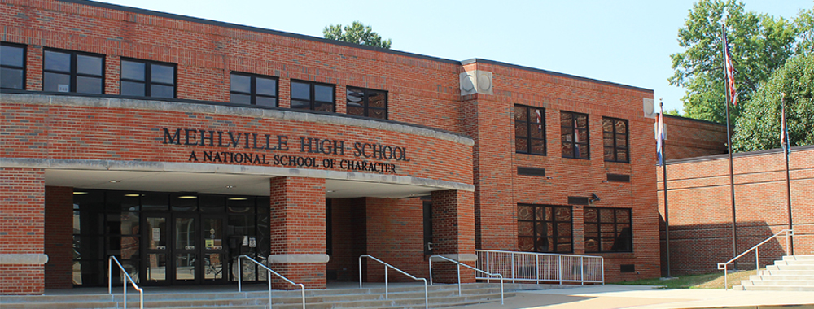

I had entered high school with the hopes of studying computer science. Specifically the field of computer programming. I had applied to as many computer science classes as I could in my freshman year. Unfortunately, I was not placed in any of the classes I chose. However, sophomore year, I was placed into two different CS classes. During these classes I learned the basics of Java and also the hardware of the computer.
My Journey into Programming
Mehlville High School
These two classes helped inspire me to continue on in the field on computer science. I was not able to take any CS classes, let alone any elective classes in my junior year. This was due to my enrollment into South Technical. During my senior year, I had one class available for an elective. I ended up choosing an APA CS class that deals with app devlopment with Android Studio.
I enrolled in the Web and Computer Programming class at South Technical at the beginning of my junior year. As a two year course, I also got the pleasure of going back in my senior year. For my first year, the material was split between HTML, CSS, and JS. For the first semester we were learning the basics of HTML and CSS. In the second semester, with JS, we went in to learning how to make web pages respond to certain actions and we also went very in-depth with user validation. During my senior year, our class delved into programming instead of web development. For the first semester we were learning C#. I found C# to be far more enjoyable than web development due to my lack of creativity. Unfortunately, we didn't only use the console for C#, we had to learn how to use the form. Another unfortunate event was that we started we C#. The second semester we went on to C++. While this language is widely used, I thouroughly despise it for how hard it is to do a lot of things and how unintuitive it is. I could go on for quite a few paragraphs about how much I detest C++, but I do not wish to pad my content with nothing but complaints.
Two ambassadors for Launch Code had come to South Tech with the intention of inspiring some of us to apply for the class. I was one of the people in my class who applied,and I was also lucky enough to be accepted. For the first unit, we started out with Python 3. Python is a very good language for beginning coders, but that aspect that I liked the most about it was how many built in functions is has. It reduces so much code that would otherwise be needed. South Technical
LC101
 For a six week unit, we ended up fairly deep into Python, which is to be expected, after all, this is taught like a college course. For unit two we moved over to web development with Python. We are still quite early in this stage, so I'm not quite sure whether I like this or not. I can say for certainty, however, that I much prefer HTML, CSS, and JS for web development. Finally, for unit three, we will be working with Java aimed at job-readiness skills.
For a six week unit, we ended up fairly deep into Python, which is to be expected, after all, this is taught like a college course. For unit two we moved over to web development with Python. We are still quite early in this stage, so I'm not quite sure whether I like this or not. I can say for certainty, however, that I much prefer HTML, CSS, and JS for web development. Finally, for unit three, we will be working with Java aimed at job-readiness skills.